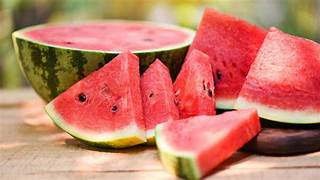
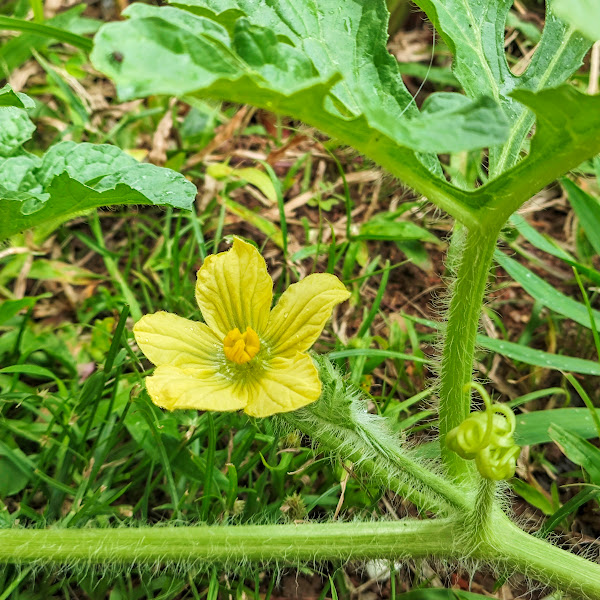
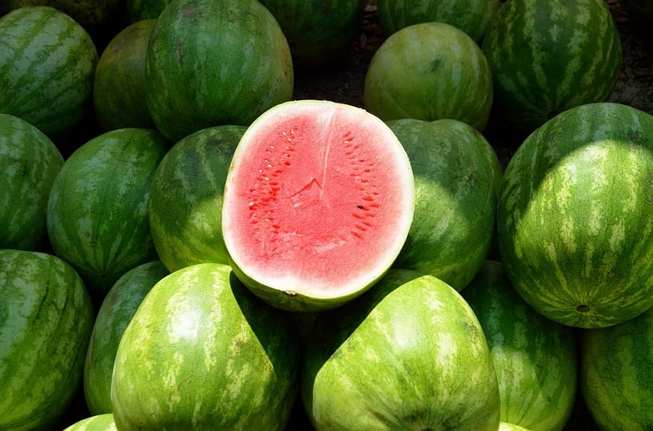
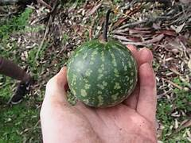
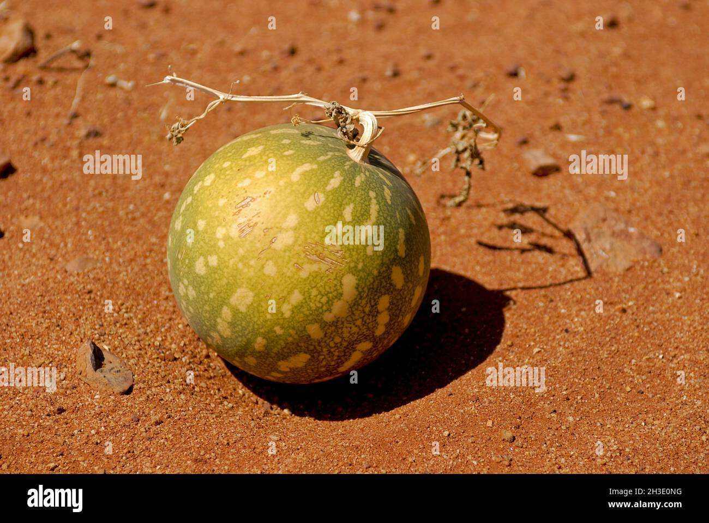
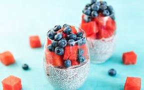
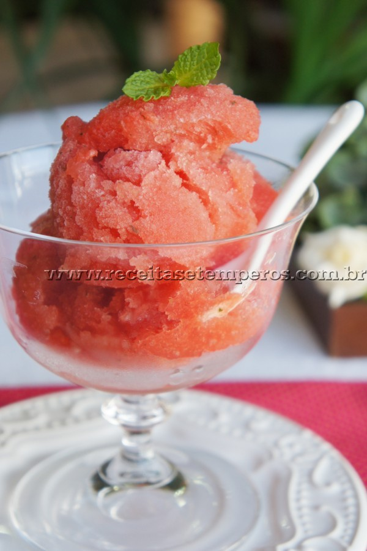

A melancia (Citrullus lanatus) é uma fruta pertencente à família Cucurbitaceae, na qual fazem parte outras plantas muito utilizadas na alimentação humana, como o melão, o pepino, a abóbora, entre outras.
A melancia é consumida no mundo todo, tendo grande relevância tanto econômica quanto social, uma vez que seu cultivo representa cerca de 7% da área mundial reservada para a produção de hortaliças, com cerca de 67% da quantidade total produzidos na China.

A cultura da melancia era conhecida dos egípcios há cerca de 2.000 anos a.C., e por causa da diversidade de formas silvestres, atualmente, é mais aceito que o gênero Citrullus tenha origem na África. Foi introduzida no continente americano pelos escravos e colonizadores europeus no século 16. A espécie se difundiu pelo mundo inteiro e é cultivada nas regiões tropicais e subtropicais do planeta. A variabilidade genética trazida do continente africano aliado ao processo de manejo da cultura na agricultura tradicional da região, tornou o Nordeste brasileiro um centro secundário de diversificação da melancia.
O gênero Citrullus é classificado como parte da divisão Magnoliophyta, da classe Magnoliopsida, da subclasse Dilleniidae, da ordem Violales e da família Cucurbitaceae. No gênero Citrullus estão incluídas quatro espécies: Citrullus lanatus, C. colocynthis, C. ecirrhosus e C. rehmii. A espécie Citrullus lanatus (Thunb.) Matsum e Nakai, inclui a melancia cultivada para consumo humano Citrullus lanatus, de ampla distribuição mundial, e Citrullus lanatus var. citroides, uma forma silvestre encontrada no sul da África e cultivada em outras partes do mundo, principalmente para a alimentação animal.
O cultivo de melancia, graças à popularidade da fruta durante todo o ano, não se limita mais aos meses de verão para agricultores que possuem terras ideais para plantar melancia. As condições ideais para plantar os frutos incluem solos levemente arenosos com boa drenagem, longos períodos de sol e bastante calor. Durante a temporada de plantio da melancia, as plantas não exigem muita atenção, mas demandam muitos recursos, como água e nutrientes, para produzir frutos doces e suculentos. Com a ajuda de tecnologias de agricultura de precisão, os produtores podem minimizar os impactos financeiros e ambientais enquanto cultivam melancias de alto rendimento e qualidade.
Para garantir o crescimento ideal e a produção dos frutos mais doces, é necessário que a melancia receba luz solar direta, idealmente de 8 a 10 horas por dia.
O clima ideal para plantar melancia precisa ser ensolarado, especialmente durante a fase de floração, para apoiar o surgimento e desenvolvimento das flores e estimular a atividade de polinização por abelhas.
Uma planta de melancia em crescimento pode tolerar um pouco de sombra leve, especialmente em regiões de plantio mais quentes, mas ainda precisa de bastante sol para produzir açúcar. Se a área for muito sombreada, o fruto pode crescer menor e em menor quantidade. Por outro lado, a exposição excessiva ao sol direto pode causar estresse térmico nas vinhas.
A melhor época para o plantio da melancia pode mudar de acordo com a região, mas é recomendável que ele seja feito com temperaturas entre 18°C e 25°C. Por isso, segundo a Embrapa, os meses mais adequados são:
Confira ainda algumas dicas relacionadas ao plantio desse fruto:
Caracterizam-se por flores solitárias, amarelas, unissexuadas, pentâmeras (partes em número 5), bonitas, sustentadas por pedicelos espessos e também muito pilosos.
As flores femininas se parecem com uma melancia em miniatura e as masculinas são extremamente finas e aparecem sempre em maior número. São as flores femininas que formarão as melancias e estas formam-se com maior intensidade sob tempo quente e úmido.

As melancias pertencem principalmente à espécie Citrullus lanatus, que é a melancia comestível mais conhecida. No entanto, existem outras espécies no mesmo gênero, como Citrullus amarus e Citrullus colocynthis, que não são consumidas da mesma forma.



A melancia é uma fruta extremamente nutritiva, rica em vitaminas e uma fonte de hidratação para o organismo.
Confira a tabela nutricional de uma unidade da fruta:
| Tabela nutricional | Quantidade total | % VD (*) |
|---|---|---|
| Calorias (valor energético) | 3220.80 kcal | 161.04% |
| Carboidratos líquidos | 780.80 g | - |
| Carboidratos | 790.56 g | 263.52% |
| Proteínas | 87.84 g | 29.28% |
| Gorduras totais | 0.00 g | 0.00% |
| Gorduras saturadas | 0.00 g | 0.00% |
| Fibra alimentar | 9.76 g | 39.04% |
| Sódio | 0.00 mg | 0.00% |
A melancia oferece diversos benefícios para a saúde, como a hidratação do organismo, redução do risco de doenças cardíacas, melhora da digestão e combate à inflamação. Além disso, é uma boa fonte devitamina C, vitamina A e potássio.
A melacia é uma fruta versátil, permitindo ser o ingrediente principal de diversas receitas.
Confira algumas:
Ingredientes
Modo de Preparar
Coloque todos os ingredientes em uma panela funda e mexa bem, em fogo médio. Deixe ferver e abaixe o fogo. Amasse bem os pedacinhos de melancia. Quando ficar com a consistência de uma geleia, a receita está pronta. Espere esfriar e pode passar em pães e torradas.
Ingredientes
Modo de Preparar
Bata o leite com as tâmaras e a baunilha. Coloque em uma tigela e adicione a chia, mexendo bem. Leve para a geladeira no mínimo por 1 hora. Sirva com as melancias picadas e mirtilos.

Ingredientes
Modo de Preparar
Em uma panela pequena junte o açúcar na água e ferva por um minuto até dissolver. Retire do fogo e deixe esfriar. No liquidificador bata a melancia e o suco de limão. Acrescente a calda de açúcar e bata novamente até misturar bem. Passe por uma peneira para uma tigela, cubra com um plástico e refrigere por duas horas ou deixe de um dia para outro. Transfira a melancia gelada para uma máquina de fazer sorvete e proceda de acordo com as instruções do fabricante. Caso não tenha a máquina, transfira para um recipiente com tampa e congele. Retire do freezer após duas horas e bata no liquidificador. Torne a congelar por duas horas, retire e bata. Repita a operação até ficar cremoso ao gosto. Mantenha no freezer com tampa. Antes de consumir, transfira para geladeira por 15 a 20 minutos e sirva decorado com folhas de hortelã. A receita pode ser congelada e mantida por até dois meses no freezer.

YARA BRASIL. Plantio de melancia: cuidados importantes. Disponível em: https://www.yarabrasil.com.br/conteudo-agronomico/blog/plantio-de-melancia-cuidados-importantes/ Acesso em: 27 abr. 2026.
EMBRAPA. Sistema de produção de melancia: socioeconomia. Disponível em: https://sistemasdeproducao.cnptia.embrapa.br/FontesHTML/Melancia/SistemaProducaoMelancia/socioeconomia.htm Acesso em: 27 abr. 2026.
MUNDO EDUCAÇÃO. Melancia. Disponível em: https://mundoeducacao.uol.com.br/biologia/melancia.htm Acesso em: 27 abr. 2026.
BIOLOGIA DA PAISAGEM. Citrullus lanatus (melancia). Disponível em: https://biologiadapaisagem.com.br/2025/01/22/citrullus-lanatus-melancia/ Acesso em: 27 abr. 2026.
WIKIPEDIA. Citrullus colocynthis. Disponível em: https://en.wikipedia.org/wiki/Citrullus_colocynthis Acesso em: 27 abr. 2026.
GUIA DA SEMANA. Receitas com melancia. Disponível em: https://www.guiadasemana.com.br/receitas/galeria/receitas-com-melancia-fruta-da-primavera Acesso em: 27 abr. 2026.